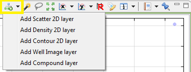
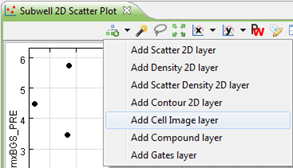
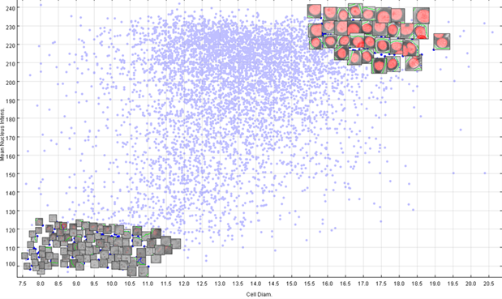

A chart layer is one representation of data points according to specific criteria. It is possible to layer another chart on top of the previous chart to get different or better results. You can add or delete layers accordingly and modify each layer in the legend of a chart.
To add a layer, click on the "Add layer" button and select the layer you would like to add.


e.g. if you would have added the "Cell image Layer" and selected 2 groups of points, you would see cell images on top of the selected points:

Chart settings - Image Layer
The image layer allows you to see the cell or well images of the selected points in a chart.
It is possible that not all the selected points will show an image. Phaedra will automatically determine how many images will be shown for an optimal (least overlapping) results.
If you open the layer specific settings (in the legend, see Chart Legends) you can adjust the way the image is shown with the following options:
| Image layers | Here you can select the layers you wish to see on the image. |
| Image scale | This is the scale in which the image will be shown. |
| Show labels | This is a label for the selected point that represents the image. |
| Show coordinates | These are the coordinates of the point that represents the image. |
| Font size | This is the font size for the label under the image (if either labels or coordinates are shown). You can choose a size from 9 to 15. |